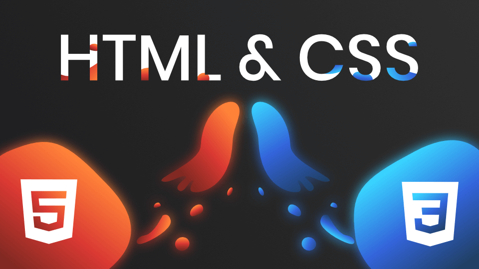

Projet de développement web pour l'entreprise Atos
Création d'un site web informatif axé sur les services et les engagements écoresponsables de l'entreprise.

1. Recueil des informations
La première phase a consisté à analyser en profondeur les services fournis par Atos. Une attention toute particulière a été accordée à la collecte de données sur leur engagement environnemental et leurs politiques de responsabilité sociétale des entreprises (RSE).
2. Implémentation et Développement
À partir des données collectées, j'ai conçu et développé l'architecture complète du site web. L'objectif était de retransmettre ces informations de manière claire, moderne et intuitive pour les utilisateurs.
Technologies Appliquées
HTML5 (Structure sémantique)
CSS3 (Stylisation & Design)
JavaScript (Interactions dynamiques)